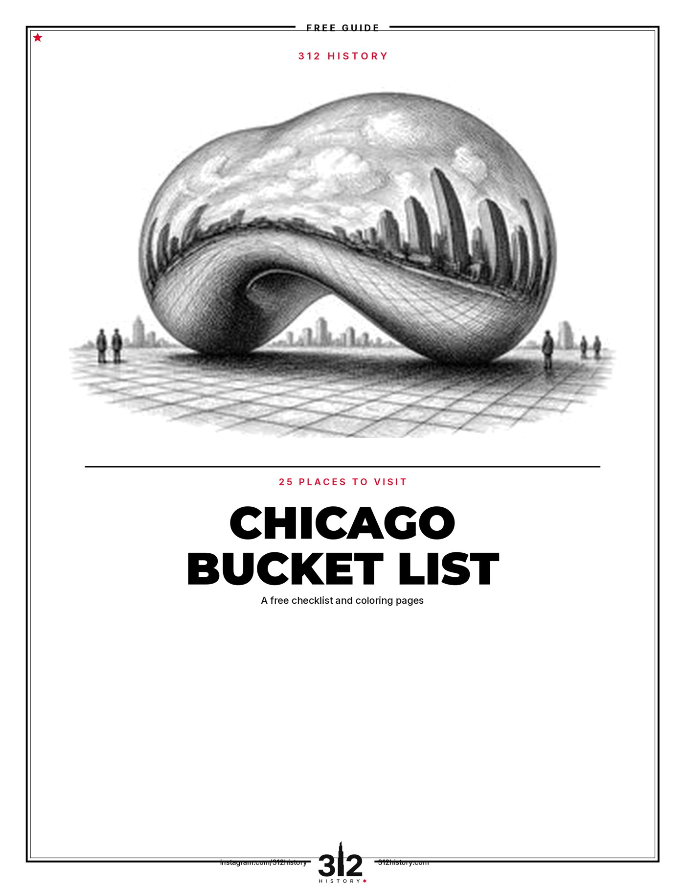
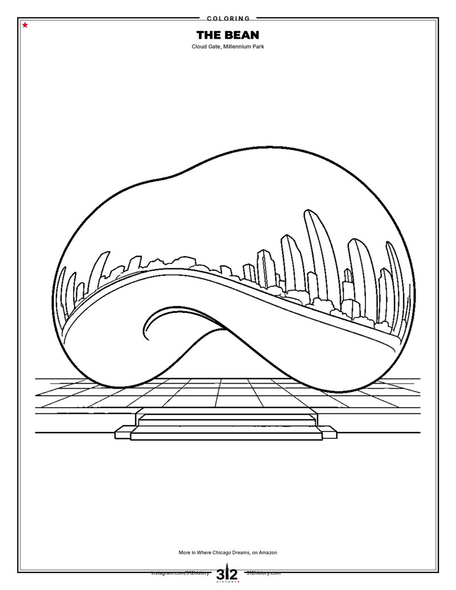
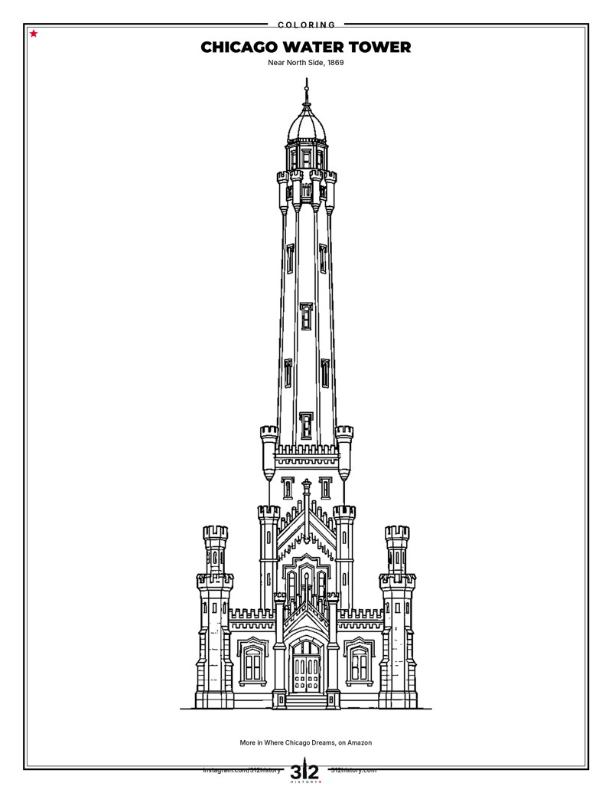
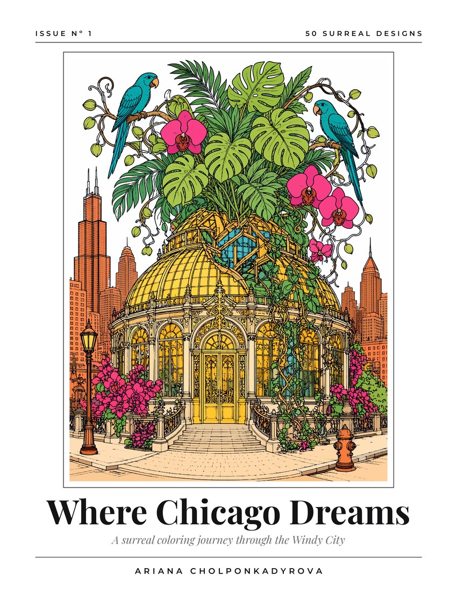

Free download ★
CHICAGOBUCKETLIST★
25 must-visit Chicago places, with a score and coloring pages. Print it, check the ones you have visited, and color the rest with a friend or with kids.
- 25 well-known places, free and paid, across the city
- A score: Tourist, Local, or True Chicagoan
- 4 coloring pages: the Bean, the Water Tower, the Picasso, and Buckingham Fountain
- Letter size, ready to print
On Instagram, follow @312History and comment CHICAGO, and we'll send you the checklist. You can also download it here, for free.



The full book
WANT THE FULL
WANT THE FULL
COLORING BOOK?
Get Where Chicago Dreams on Amazon: 50 surreal coloring pages of Chicago landmarks by Ariana Cholponkadyrova. Paperback, 8.5 × 11 in.